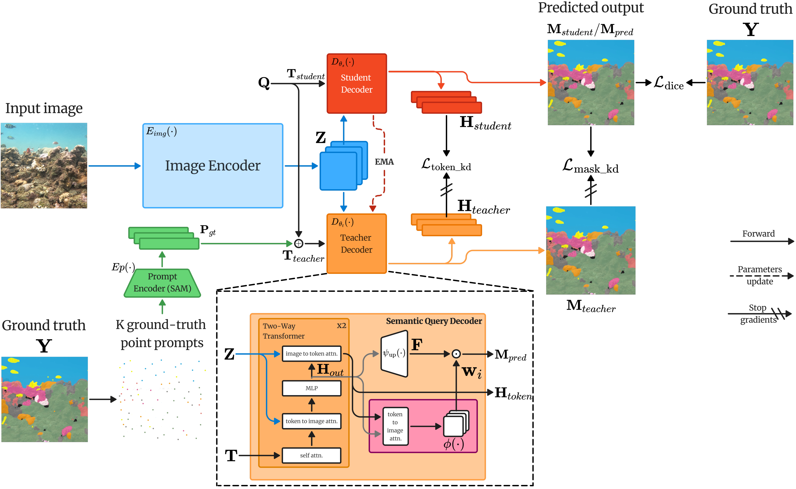
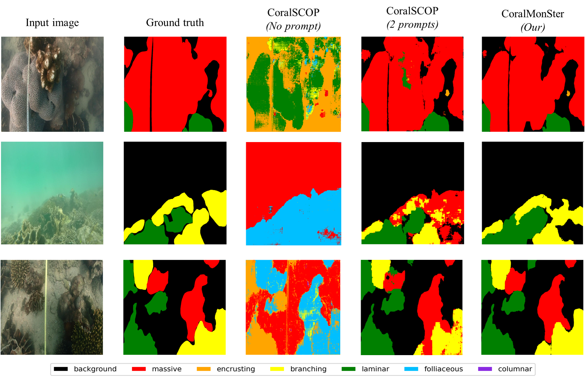

Abstract
CoralMonSter is a premium, prompt-free coral reef segmentation framework built on top of Segment Anything (SAM). It leverages a novel Teacher-Student Distillation architecture and Learnable Class Tokens to achieve state-of-the-art semantic segmentation without requiring user prompts.
By introducing a Semantic Query Decoder (SQD) and a Momentum Distillation framework, CoralMonSter effectively bridges the gap between SAM's class-agnostic segmentation and the need for semantic understanding in coral ecology. Our method achieves 57.28% mIoU on the HKCoral benchmark, significantly outperforming frozen baselines.
Methodology
We introduce CoralMonSter, a unified framework that adapts SAM into a fully automatic, class-aware semantic segmentation model. It incorporates a novel Semantic Query Decoder (SQD) that replaces user prompts with learnable class-specific queries. The model is trained using a Momentum Distillation strategy, in which an Exponential Moving Average (EMA) teacher provides prompt-based guidance derived from ground-truth annotations.

Experimental Results
CoralMonSter achieves state-of-the-art performance on the HKCoral and CoralScapes datasets. It significantly outperforms fully supervised segmenters (Mask2Former, SegFormer) and existing SAM-based adaptations (CoralSCOP). Notably, our prompt-free model surpasses even the 2-point prompted versions of baseline models.
Overall Performance Comparison
| Method | HKCoral | CoralScapes | ||
|---|---|---|---|---|
| IoU | Pixel Acc | IoU | Pixel Acc | |
| Mask2Former (Swin-B) | 50.03 | 91.12 | 31.38 | 65.64 |
| SegFormer (MiT-B5) | 46.74 | 90.73 | 17.69 | 66.80 |
| SAM (No prompt) | 26.39 | - | 30.43 | - |
| CoralSCOP (No prompt) | 12.30 | 55.78 | 14.01 | 18.87 |
| CoralMonSter (Ours) | 57.28 | 91.77 | 38.76 | 71.87 |

Qualitative Analysis. CoralMonSter generates clean, coherent masks that closely align with the ground truth without any manual prompts, significantly outperforming CoralSCOP in both prompt-free and prompt-guided settings.
BibTeX
@article{Hoang2024CoralMonSter,
title={CoralMonSter: Prompt-Free Segment Anything via Momentum Distillation for Automated Coral Reef Monitoring},
author={Hoang, Nhat-Minh and Vu, Hoang-Dieu and Luong, Thien-Van and Dinh, Dzung Van and Phung, Manh-Duong and Do-Danh, Cuong and Pham, Huy-Hieu},
journal={Preprint},
year={2024},
url={https://github.com/nhatminh-hoang/CoralMonSter}
}